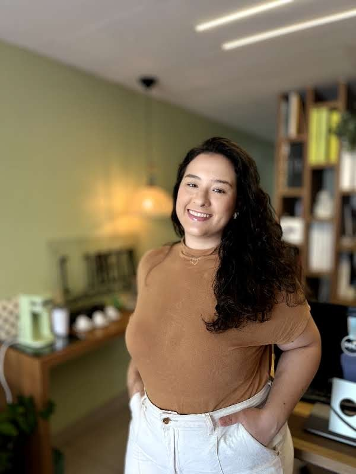
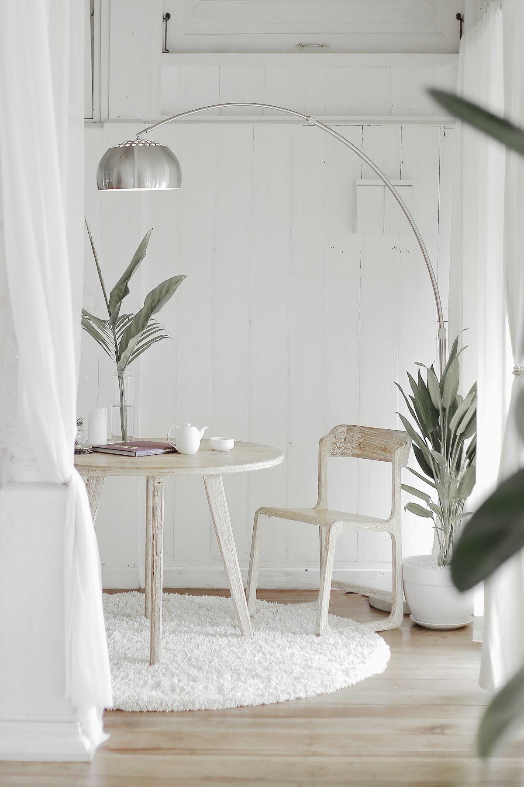

Principal
Principal
Detalhamento executivo
Plantas, cortes, elevações e paginações com informação completa para a execução — sem dúvida na obra.

Detalhamento executivo e terceirização de projetos para arquitetos e escritórios — desenho claro, cotas no lugar e o cuidado que faz a obra sair como o projeto. Para arquitetos, escritórios e comunidades — atendimento remoto, em todo o Brasil.



Sou a Ana, arquiteta apaixonada por desenho bem resolvido — daquele em que a marcenaria encaixa, a cota fecha e a obra acontece sem sustos. Trabalho com detalhamento e terceirização de projetos para arquitetos e escritórios que precisam de fôlego no executivo.
Tenho um carinho especial pela arquitetura religiosa: capelas, mobiliário litúrgico e a adequação de espaços de fé. Gosto de estudar a história por trás de cada projeto — acredito que é no detalhe que um bom desenho vira um lugar com alma.
Cronograma combinado no início e entregas parciais para você acompanhar — sem sumiço, sem surpresa.
Pranchas organizadas, cotas completas e especificações claras — menos dúvida no canteiro, menos retrabalho.
Trabalho dentro do template e do padrão gráfico do seu escritório. O projeto continua com a sua cara.
Você fala comigo, não com um formulário. Alinhamentos rápidos e revisões sem burocracia.
Do briefing à prancha final — detalhamento claro, organizado e pronto para a obra.
Principal
Plantas, cortes, elevações e paginações com informação completa para a execução — sem dúvida na obra.

Do conceito ao desenho de fabricação.
Medidas, acabamentos e furações prontos para o fornecedor.
Pranchas e especificações organizadas no padrão do seu escritório.
 Nicho de paixão
Nicho de paixão
Capelas, mobiliário litúrgico e adequação litúrgica de ambientes já construídos, com respeito à liturgia.
Conferência de medidas e interferências antes de a obra descobrir.

O detalhe é a minha forma de cuidar: é nele que o projeto deixa de ser desenho e vira lugar.Ana Célia Andrade
Cada cota, cada encontro e cada acabamento resolvidos no desenho.
Materiais verdadeiros e detalhes pensados para durar.
O contexto e a história por trás de cada projeto.
CapelasCapela e Assembleia Mobiliário litúrgicoAltar e AmbãoMarcenariaMobiliário sob medida
Mobiliário litúrgicoAltar e AmbãoMarcenariaMobiliário sob medida DetalhamentoCaderno Executivo
DetalhamentoCaderno Executivo
Adequação litúrgicaAmbientes renovadosSe você é arquiteto e precisa de apoio no executivo — ou cuida de uma comunidade que sonha com um espaço de fé — me chama. A primeira conversa é gratuita.